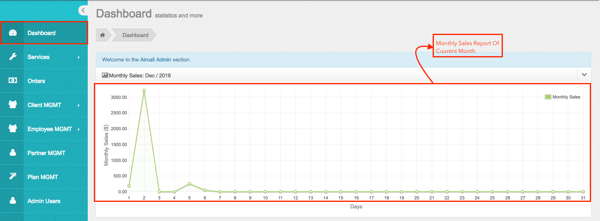
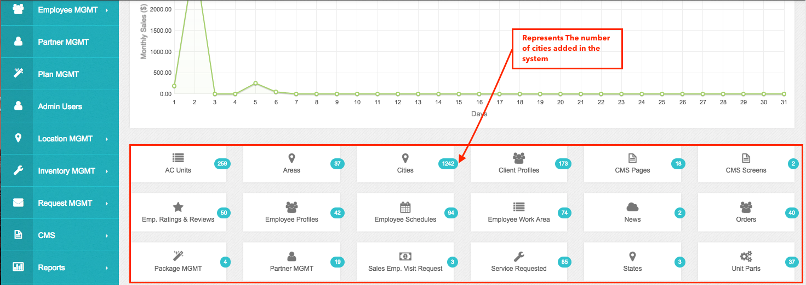
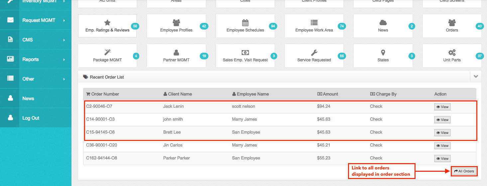
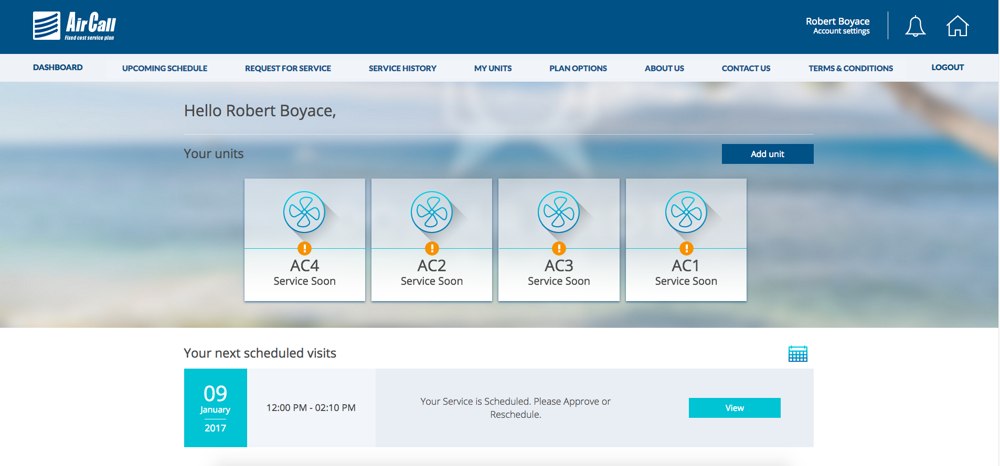
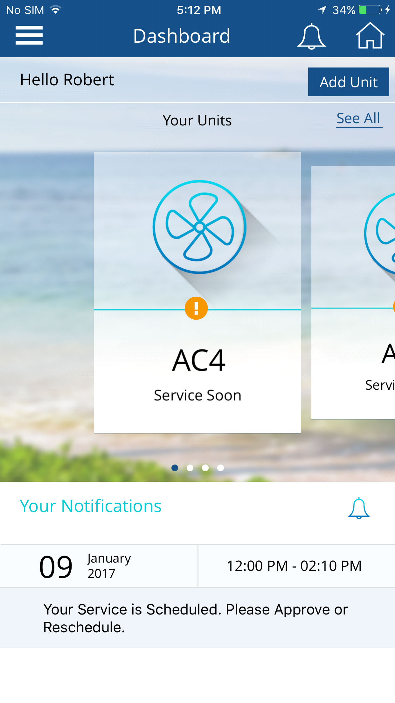
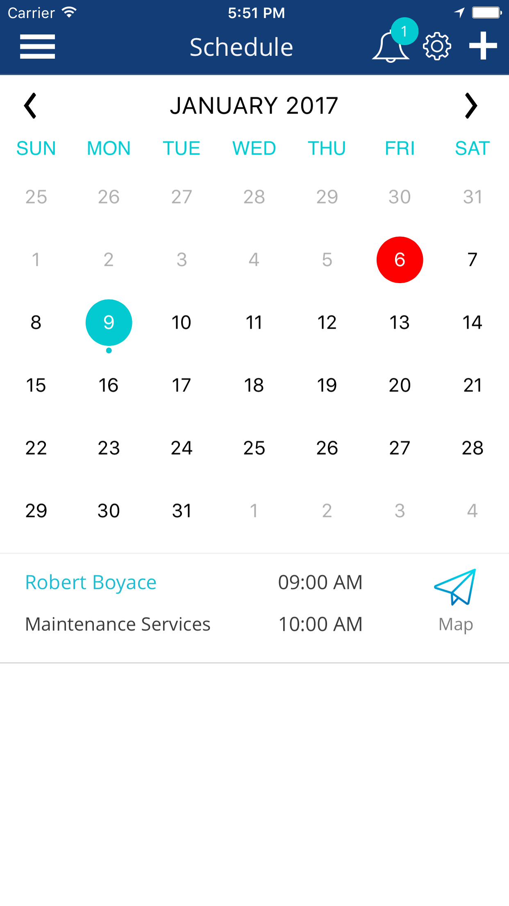

Dashboard
•Whenever Admin login into system admin will be directed to this section.
• Dashboard will display the monthly sales report of current month.

• From this section admin can also get quick information of all the section in the system.
• As displayed in the below image, Admin will get information for below list of section:
- AC Units: Displays the number of units added in the system and by clicking on it, admin will redirected to the ‘Client AC Unit’ section.
- Areas: Displays the number of Work areas created by the admin in the system and by clicking on it, admin will be redirected to the ‘Area’ section.
- Cities: Displays the number of cities added by the admin in the system and by clicking on it, the admin will redirected to the ‘Cities’ section.
- Client Profiles: Displays the total number of client registered in the system and by clicking on it, admin will redirect to the ‘Client Profiles’ section.
- CMS Pages: Displays the total number of CMS Pages added by the admin in the system and by clicking on it, Admin will redirect to the ‘Pages’ section under ‘CMS’ section.
- CMS Screens: Displays the total number of ‘Mobile Screens’ added by the admin in the system and by clicking on it, Admin will redirect to the ‘Screens’ section under “CMC’ section.
- Employee Ratings & Reviews: Displays the number of services rated by the client from the client application or from client portal. By clicking on it admin will redirect to the ‘Rating and Review’ section under ‘Employee MGMT’ section.
- Employee Profiles: Displays the number of employee added in the system by admin and by clicking on it, admin will redirect to the ‘Employee Profile’ section under ‘Employee MGMT’ section.
- Employee Schedules: Displays the number of Scheduled Services in the system. By clicking on it admin will redirect to the ‘Schedule’ section under ‘Services’ section.
- Employee Work Area: Displays the total number of first and Second priority areas assigned to the employee by admin. By clicking on it admin will redirect to the ‘Employee WorkAreas’ under Employee MGMT section.
- News: Displays the number of News added by the admin which will display in the client portal. By clicking on it admin will redirect to the ‘News’ section.
- Orders: Displays the total number of orders generated by admin or employee. By clicking on it admin will redirect to ‘Orders’ section.
- Package MGMT: Displays the number of Plan added in the system by admin. By clicking on it admin will redirect to ‘Plan MGMT’ section.
- Partner MGMT: Displays the number of partner associated with the system added by the admin. By clicking on it admin will redirect to the ‘Partner MGMT’ section.
- Sales Employee Visit Request: Displays the number of ‘Sales person visit request’ added by the employee from employee application. By clicking on it admin will redirect to the ‘Sales Visit’ section under ‘Request MGMT’ section.
- Service Requested: Displays the number of service request added by the client from client application or client portal. By clicking on it admin will redirect to ‘Pending’ section under ‘Services’ section.
- States: Display the number of states added in the system by the admin. By clicking on it, admin will redirect to the ‘States’ section under ‘Location MGMT’ section.
- Unit Parts: Display the total number of parts added in the system by admin. By clicking on it admin will redirect to the ‘Part List’ section under ‘Inventory MGMT’ section.

• Below this section, a list of recent order will be displayed, so that admin can get quick information about recent order. By clicking on ‘All Orders’ admin will redirect to the ‘Orders’ section.

- Dashboard of client application and client portal :
- list of information show in dashboard :
1) Top of screen there are buttons of notification and address.
2) On the notification icon it shows count of unread notifications if user does not have any unread notifications then notification count will not display as per screenshot.
3) If user click on notification icon it will redirect to notification listing screen.
4) If User click on Home icon then it will redirect to address listing screen.
5) In the dashboard displaying 5 units to see all units click on “See All” button, it will redirect to all unit listing screen.
6) There are maximum 5 different notification will be shown in dashboard which need to perform action from client side and first notification always will be for scheduled services accept or cancel service if available.
7) All the notifications and units in dashboard will be shown only for default selected address.
See below screenshot of client application and portal dashboard.


- Dashboard of Employee application :
- list of information show in dashboard :
1) Top of screen there are buttons of notification and setting and request new schedule.
2) On the notification icon it shows count of unread notifications if user does not have any unread notifications as per screenshot then notification count will not display.
3) If user click on notification icon it will redirect to notification listing screen.
4) If User click on Setting icon then it will redirect to setting screen.
5) By clicking on “+” icon Employee can request new schedule.
6) As show in screenshot current date will highlight with red circle and the dates on which service scheduled are highlight with blue circle.
7) When user tap on particular date, below of calendar list of services will display which are scheduled on the date.
8) Employee can view address of client on tap of map from listing.
see below screenshot of employee application dashboard

Created with the Personal Edition of HelpNDoc: Create help files for the Qt Help Framework